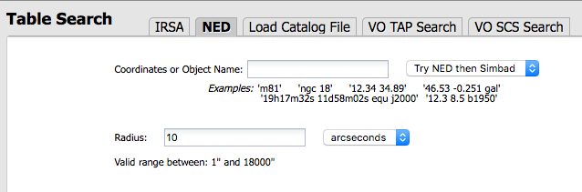
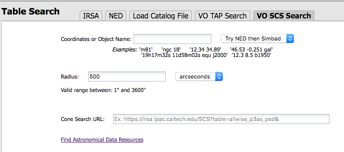

Contents of page/chapter:
+NED Objects -- Searching for NED objects
+VO SCS -- VO Simple Cone Search
To see this tab as a choice on the top, you may need to select it from the side menu.

As for the other catalog searches, the tool may pre-fill the target position with its best guess of the coordinates of the target with which you have been working. You can use an object name in place of coordinates. Note that although NED is used for name resolution, the actual search is then performed using coordinates, as opposed to name. In this case, you are limited to a cone search, so the next option is the cone search radius. Pick your units from the drop-down first, and then enter a number; if you enter a number and then select from the drop-down, it will convert your number from the old units to the new units. There are both upper and lower limits to your search radius; it will tell you if you request something too big or too small.
From the NED results, you have one-click access to the fully detailed information from NED on any object returned from such a search. The search results will generally include a column "Details", though you may have to scroll to the right to see it. Clicking on a link in this column takes you directly to the full NED information display for the selected object in a new window.
The result of any NED search is a table that behaves like any other table in this tool.
To see this tab as a choice on the top, you may need to select it from the side menu.

As for the other searches, the tool may try to pre-fill the target position with the coordinates of the target with which you have been working. In this case, you are limited to a cone search, so the next option is the cone search radius. As usual, pick your units from the drop-down first, and then enter a number; if you enter a number and then select from the drop-down, it will convert your number from the old units to the new units. There are both upper and lower limits to your search radius; it will tell you if you request something too big or too small.
If you know your VO URL already, you can jump down to the Cone Search URL box and type or paste your URL into the box and hit search.
More commonly, however, users do not know a priori which URL to use. Click on "Find Astronomical Data Resources" to be dropped into a VO search. Find the URL corresponding to the catalog you want, copy it, and go back and paste it in the URL box. The URL should not have the RA and Dec in it; the tool will add your RA and Dec as listed to the URL in the right syntax. Click on "Search" to initiate the search.
Example
Load the tool. Search on IC1396. Go to the catalogs tab. Choose "VO
Catalog." It wants the root URL for a cone search. Click on "Find
Astronomical Data Resources", which goes here  . Search on IPHAS. Get this page
. Search on IPHAS. Get this page  .
Look for the complete catalog release (not just one associated with
one specific study). The name of the catalog goes here
.
Look for the complete catalog release (not just one associated with
one specific study). The name of the catalog goes here  . Hit
the [+] to expand it. There is one URL listed there, under "available
endpoints for the standard interface." Copy that URL and paste it into
the search form. The IRSA tool will append your coordinates and radius
and return you a table.
. Hit
the [+] to expand it. There is one URL listed there, under "available
endpoints for the standard interface." Copy that URL and paste it into
the search form. The IRSA tool will append your coordinates and radius
and return you a table.
⚠ Tips and Troubleshooting
The result of any VO SCS search is a catalog that can be interacted with like any other catalog in this tool.